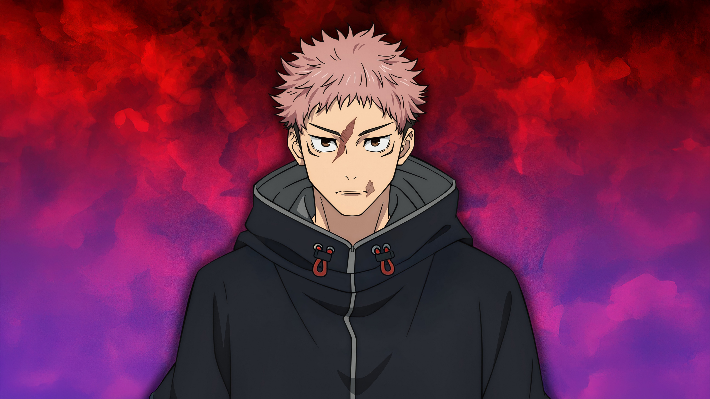

Yuji Itadori is a fearless and compassionate fighter whose life changed forever after becoming the vessel of Ryomen Sukuna. He carries impossible pain, but still chooses to protect others.
Yuji’s power is not just physical. It comes from his heart, his resolve, and his refusal to abandon people even when the world becomes cruel.
Itadori represents humanity inside chaos. His orange-red theme reflects raw energy, pain, motion, and courage. Even while carrying darkness inside him, he keeps moving forward with empathy and strength.